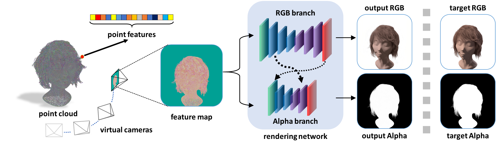
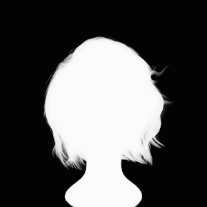
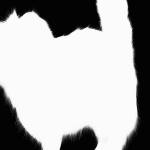
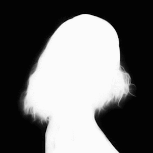
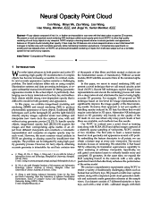

Cen Wang1 Minye Wu1,2 Ziyu Wang1 Liao Wang1 Hao Sheng3 Jingyi Yu1
1ShanghaiTech Univeristy 2Chinese Academy of Sciences 3Beihang University
|  |
Our NOPC framework: From a 3D point cloud $\mathcal{P}$, we first learn its corresponding cloud $\mathcal{F}$. To render virtual new view $V$, we project $\mathcal{P}$ and $\mathcal{F}$ onto $V$ to form a view-dependent feature map $\mathbf{M}$. Our multiple-branch Encoder-Decoder network maps $\mathbf{M}$ to an RGB image and an alpha matte at $V$. The network can be trained using the ground truth RGB images and alpha mattes in an end-to-end manner in Sec. 3. |
Abstract
Fuzzy objects composed of hair, fur, or feather are impossible to scan even with the latest active or passive 3D scanners. We present a novel and practical neural rendering (NR) technique called neural opacity point cloud (NOPC) to allow high quality rendering of such fuzzy objects at any viewpoint. NOPC employs a learning-based scheme to extract geometric and appearance features on 3D point clouds including their opacity. It then maps the 3D features onto virtual viewpoints where a new U-Net based NR manages to handle noisy and incomplete geometry while maintaining translation equivariance. Comprehensive experiments on existing and new datasets show our NOPC can produce photorealistic rendering on inputs from multi-view setups such as a turntable system for hair and furry toy captures.
Results
 |
 |  |
 |
 |
 |  |
 |
 |
 |
 | |
 |
Downloads
|  | " Neural Opacity Point Cloud" Cen Wang, Minye Wu, Ziyu Wang, Liao Wang, Hao Sheng, Jingyi Yu. IEEE International Conference on Computational Photography (ICCP), 2020 |
Last update: Apr. 6, 2020